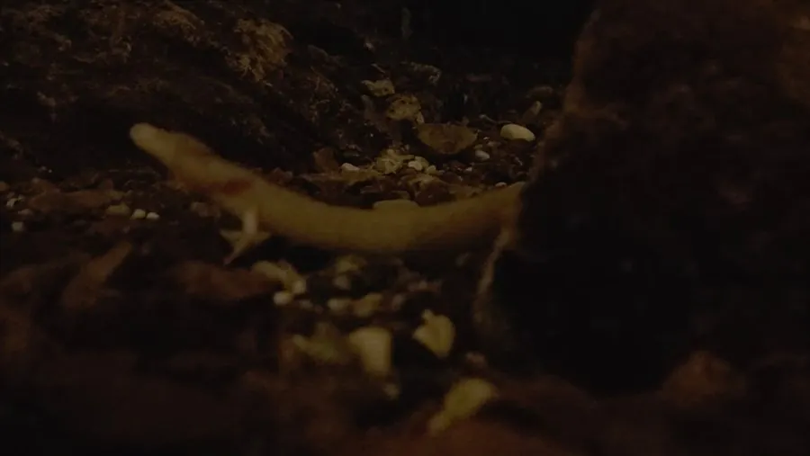

两栖动物 · 动物界
洞螈 Proteus anguinus

欧洲喀斯特洞穴中的盲螈，皮肤苍白、眼睛退化，终生保留外鳃，能多年不进食，被称为“洞穴人鱼”。
- 分类
- 门脊索动物门纲两栖纲目有尾目科洞螈科属洞螈属
- 栖息环境
- 巴尔干半岛喀斯特洞穴与地下暗河
- 地理分布
- 斯洛文尼亚、克罗地亚、波斯尼亚等地的喀斯特地下水系
- 保护级别
- IUCN 易危（VU）；非中国原产，在中国无保护级别
物种志
洞螈体长 20–30 厘米，身体细长似蛇，皮肤呈粉白色或肉色，因缺乏色素而近乎半透明；眼睛退化，藏在皮肤下，仅能感知光线强弱，头部两侧保留三对羽毛状外鳃，四肢细小。
它生活在巴尔干半岛的喀斯特洞穴和地下暗河中，终生水生，依靠侧线和化学感受寻找小型甲壳类、蠕虫和蜗牛。洞螈保留幼体特征，不完成变态，繁殖周期很长，雌螈约 6–7 年才产一次卵。它能在食物匮乏的洞穴中长时间禁食，代谢率很低，寿命可达数十年甚至百年。由于地下水污染、洞穴旅游和非法捕捉，洞螈被列为易危物种，斯洛文尼亚等地已立法保护其栖息地。
形态与习性
- 食性小型甲壳类、蠕虫和蜗牛
- 体长约 20–30 cm
- 感觉眼睛退化，靠侧线和化学感受导航
- 繁殖约 6–7 年繁殖一次，卵生
- 寿命可达 60–100 年
- 呼吸终生保留三对外鳃
趣味知识
- 洞螈的眼睛藏在皮肤下，几乎看不见东西，靠侧线感知水流。
- 它终生保留外鳃，不会完成变态，是典型的幼态持续动物。
- 洞螈能长时间不进食，新陈代谢极低，寿命可接近百年。